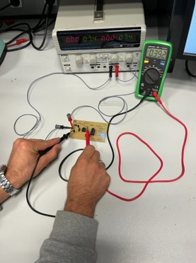
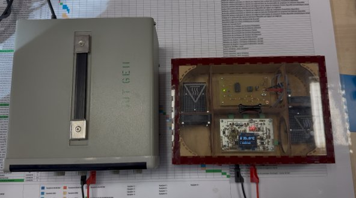
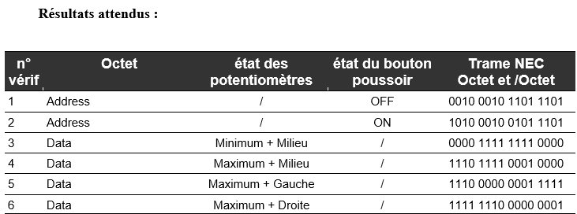
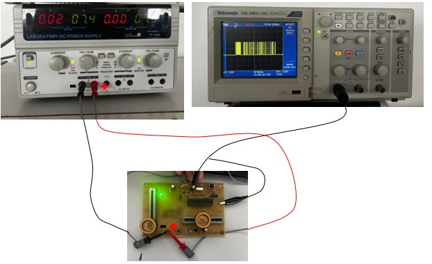

Je rédige un dossier
de vérification
Concevoir un produit, c'est aussi prouver qu'il fonctionne. Cette compétence consiste à rédiger le Dossier De Vérification (DDV) — un document qui formalise des essais, consigne les résultats mesurés et les compare aux exigences du cahier des charges. Chaque paragraphe d'essai suit une structure rigoureuse : but, moyens, procédure, résultats attendus, résultats obtenus, statut de conformité.
BUT 1 · SAÉ S1
SLR — Système Sonore et Lumineux Rafale
Le DDV du projet SLR a été ma première rédaction complète d'un dossier de vérification. J'ai rédigé les deux essais principaux — ESS_CLIGNOTE et ESS_INTENSITES — ainsi que la conclusion et la matrice de conformité finale. Cette première expérience m'a appris à structurer un protocole d'essai reproductible : but précis, liste du matériel, procédure pas à pas, tableau de résultats attendus.
Pour ESS_CLIGNOTE, j'ai mis en place le banc de test : la carte lumière SLR alimentée en 5V, la sonde de l'oscilloscope positionnée sur la piste de la résistance R4. Réglé à 250ms/div puis 25ms/div, l'oscilloscope m'a permis de mesurer une période de 1,8s et un temps actif de 108ms — deux valeurs conformes à la fenêtre ±20% du cahier des charges. J'ai aussi documenté un problème concret rencontré : un NE555 monté à l'envers, détecté lors des tests et remplacé rapidement.
La rédaction de la matrice de conformité finale m'a appris la valeur de la traçabilité : pour chaque exigence, on inscrit la méthode de vérification utilisée et le statut obtenu. Ce tableau devient la preuve formelle, transmissible au client, que chaque point du cahier des charges a bien été contrôlé.

Figure 1 : Montage de test ESS_CLIGNOTE — alimentation 5V, carte lumière SLR, sonde oscilloscope sur R4

Figure 2 : Période du signal CLIGNOTE mesurée à l'oscilloscope (250ms/div) — 1,8s, conforme
BUT 1 · SAÉ S1
TDB — Thermomètre De Bébé
Sur le projet TDB, j'ai co-rédigé plusieurs essais couvrant des exigences variées : les dimensions mécaniques de la carte, l'autonomie de la batterie, le fonctionnement de l'interrupteur, et les tensions de seuil générées par le pont diviseur. Cette diversité m'a confronté à des méthodes de mesure différentes — pied à coulisse, voltmètre, ampèremètre — et à la nécessité d'adapter le protocole à chaque grandeur à vérifier.
Pour ESS_SEUILS, j'ai mesuré au voltmètre les deux tensions générées par le pont diviseur : 0,362V pour le seuil froid et 0,392V pour le seuil chaud, conformes à ±5%. Pour ESS_AUTONOMIE, en mesurant le courant consommé (51,6mA au pire cas) et en appliquant t=E/I sur les 80% exploitables de la batterie 350mAh, j'ai calculé une autonomie de 42,73h — bien au-delà des 24h exigées.
Ce projet m'a confronté à ma première non-conformité documentée : les trous de fixation mesuraient 3,21mm au lieu de 4mm, faute d'un foret adapté. J'ai appris qu'un DDV honnête inclut les problèmes rencontrés et les solutions envisagées — transparence envers le client, mais aussi traçabilité des contraintes de production pour les prochaines réalisations.

Figure 3 : Mesure au voltmètre des tensions de seuil du pont diviseur — 0,362V et 0,392V, conformes à ±5%

Figure 4 : Carte TDB dans l'étuve thermostatée — vérification des transitions de voyant selon les paliers de température
BUT 1 · SAÉ S2
KAH — Kart à Hélice
Le DDV KAH représente mon apport le plus complet en vérification : j'ai co-rédigé six essais sur la partie émetteur, couvrant les exigences mécaniques, le traitement des trames infrarouge, la répétitivité de l'émission, l'énergie et le fonctionnement de l'interrupteur. La complexité du système — deux cartes communicant en infrarouge — exigeait des procédures d'essai plus élaborées que dans les projets précédents.
L'essai ESS_EXIG_EMTT_TRAITEMENT m'a demandé de concevoir une procédure rigoureuse de décodage de trames infrarouge à l'oscilloscope : six configurations de potentiomètres et du bouton klaxon, chacune associée à une trame NEC attendue bit à bit. C'est la première fois que je vérifiait non pas une grandeur analogique, mais une information numérique encodée.
Pour ESS_EXIG_EMTT_REPETITIVITE, j'ai mesuré les délais entre deux trames successives : 116ms lorsque les paramètres varient (attendu 108ms ±10%) et 334ms lorsqu'ils sont identiques (attendu 333ms ±10%). Les deux valeurs sont conformes. Ce résultat m'a appris à exploiter méthodiquement les outils de mesure temporelle de l'oscilloscope.

Figure 5 : Résultats attendus de l'essai traitement — 6 configurations de trame NEC à vérifier bit à bit

Figure 6 : Montage de vérification de la trame NEC — alimentation de table, carte émetteur et oscilloscope